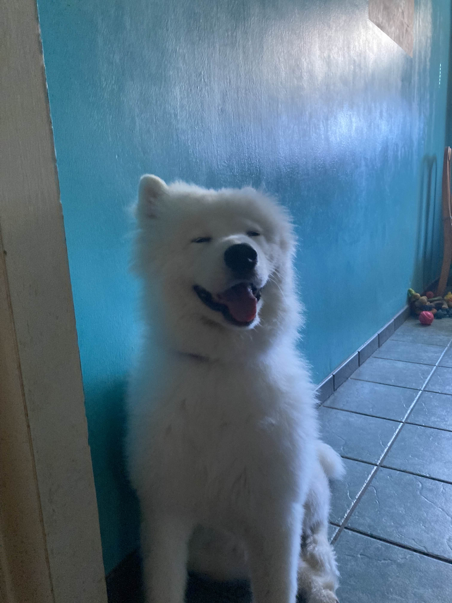
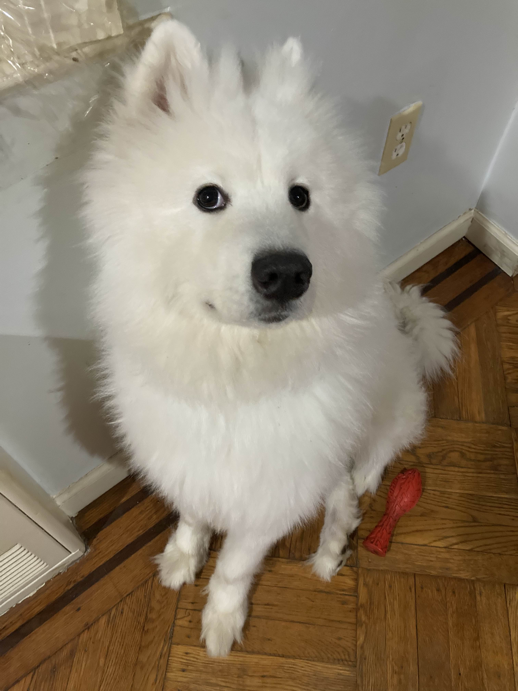
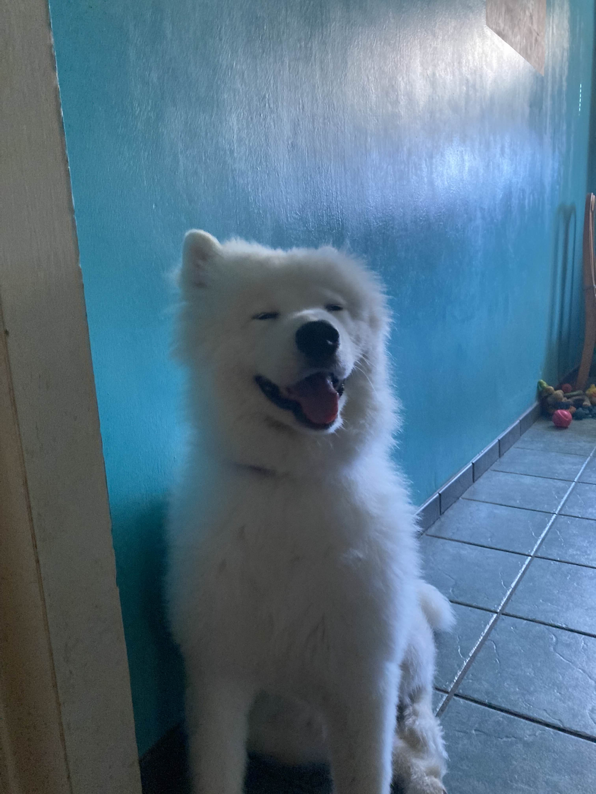
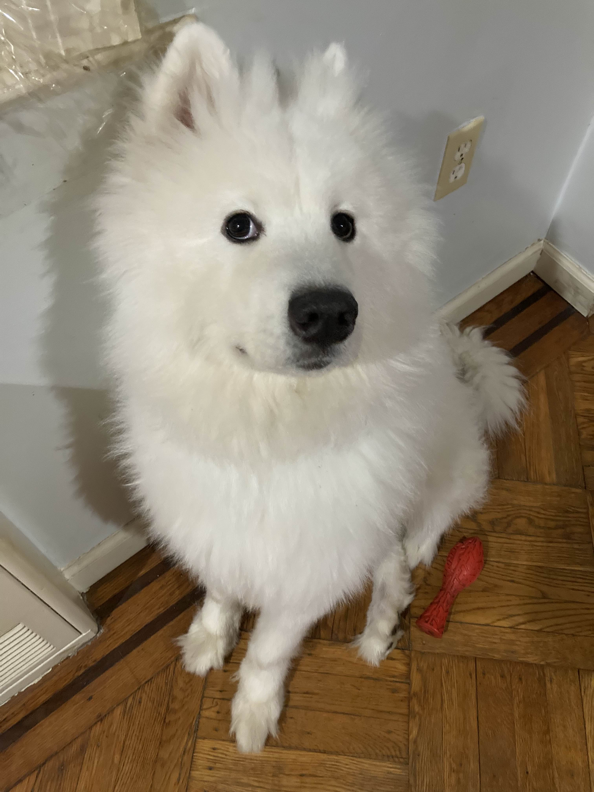

Renegade Hearts
Matchstick Dreamer
Paint the City Red
The Invisible Game
The Trick's on You
Leaves in the Wind
Kaishun Resort
City of Glass
Music and Miscellaneous
As someone who writes songs in their free time, here are a handful of songs I'm quite proud of these past few years.
Having studied music and music theory since I was in middle school, I originally used MuseScore to compose songs before switching to Ableton Live.
My comfort zone is usually in writing rock and pop-punk songs, though I've occasionally experimented with different genres like synthwave and jazz. During my
game development courses, I loved taking the opportunity to compose the soundtrack for my projects, especially since it would often require me
to switch up genres and my compositional style entirely to account for the final product being background music.
This past year, I've been trying to build up more confidence and experimenting with recording vocals for my songs. Since I still don't have actual recording equipment,
I'm making do with a webcam microphone, but I've made it work. I also play guitar, piano, and trombone.
 


